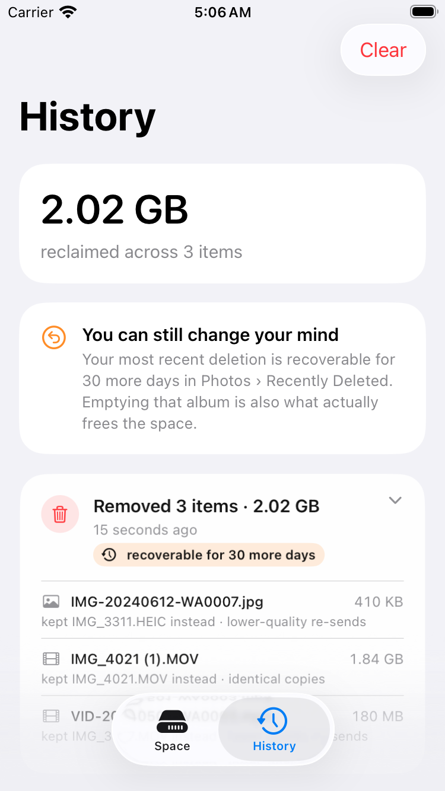
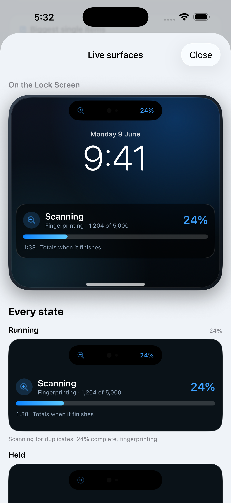

The idea
A space budget, ranked by regret
Apple's Photos finds duplicates and offers to merge them. It does not show you why two pictures matched, does not let you pick which one survives, and never says how many gigabytes you get. So you are handed a list and left holding the real question. DupeSpace starts from the question: you set a target, and it builds the cheapest set of deletions that reaches it, cheapest meaning least regretted.
-
TIER 0
Identical copies
Loses nothingByte for byte the same file. Deleting these loses nothing at all.
4.1 GB · 38 items -
TIER 1
Lower-quality re-sends
Loses nothingSmaller re-encodes of a photo you still have at full size. The 1280px copy that came back from a chat, while the 4032px original stays.
5.3 GB · 112 items -
TIER 2
Burst leftovers
Very lowOther frames from one press of the shutter, with the sharpest frame staying. Worth a look first.
3.7 GB · 61 items -
TIER 3
Similar shots
Your callAlike, but not the same photo. Four takes of one view. Nothing here is ever ticked for you.
6.2 GB · 74 items
Try the question
Plan: 12.0 GB across 173 items.
The two zero-loss tiers give 9.4 GB. The rest comes from burst leftovers.
Sample numbers, to show the shape of the answer. The app works these out from your own library, and selects nothing until you say so.


How it works
Four passes, cheapest first
Expensive work is only ever done on what survived the cheap work. Nothing leaves the device, and nothing is downloaded to be looked at.
-
Metadata eliminates almost everything
Kind, dimensions and file size are compared first. Anything unique on those three can have no duplicate and is out before a single byte is read.
-
Survivors are digested
What is left is streamed through SHA-256. Equal digests mean equal files, and that equality is transitive, so byte-identical copies are grouped with union-find.
-
Two fingerprints that must agree
Images byte equality did not settle get a dHash and a DCT-based pHash. The two are sensitive to different mistakes, so both have to agree before a pair counts as a match.
-
Videos are opened last
Videos pair on duration — a transcode barely moves it — and only then get sampled frame by frame. That is what catches the copy that came back from a chat.
And then it remembers
Everything expensive is cached against a content version the photo library already hands over, so a second scan of an unchanged library re-reads nothing. A scan can be held rather than cancelled, and slows itself down on a hot phone or in Low Power Mode. Every scan and every deletion leaves a record: what went, what was kept in its place, what it was worth, and how many days remain to undo it.

Fixed by tests, not by intention
The four rules it will not break
-
1. Nothing is deleted on transitive evidence
Digest equality is transitive, so byte-identical copies can be grouped with union-find. A distance threshold is not: A~B and B~C says nothing about A~C. Similar photos are therefore clustered as stars around the copy that survives, and every member was measured against that copy directly.
-
2. A group never loses every copy
Checked by CleanupValidator, which re-runs from scratch immediately before the library is told to destroy anything — because by then the selection has passed through UI state.
-
3. Favourites and album members are never pre-ticked
Neither is anything above the two tiers where deletion provably costs nothing, nor a copy carrying edits the survivor does not have. A digest covers the original resource; work done on top of it is not something "identical" can promise away.
-
4. Nothing is downloaded to be scanned
Every read sets isNetworkAccessAllowed = false. An original that lives in iCloud is reported as deliberately unread, rather than pulled down over someone's data plan.
Where the rules live
Every decision that can destroy a file sits in DupeCore, a package with no PhotoKit, Vision or SwiftUI types in it, so all of it runs under unit test without a simulator. Which copy survives is a rule you can read on screen — favourite or album member, then edited, then highest resolution, then largest file, then oldest — and change whenever you disagree.

Outside the app
One state, on every surface
The widget
Free space, what the last scan found, and how much has been reclaimed in total — in five families, down to the inline one. It reads a snapshot the app leaves in a shared container rather than computing anything: a widget gets a few tens of milliseconds and no photo library access at all. The write is a file, and atomic, so a widget reloading mid-write reads the previous snapshot instead of half of the next one.
The Live Activity
A scan of a full library takes minutes, and nobody watches a progress bar for minutes, so a running scan appears on the Lock Screen and in the Dynamic Island. Every surface renders one state, so a scan cannot be 40% done in one place and 60% in another, and nothing is claimed found until the scan has actually decided. Updates are rationed against ActivityKit's budget, except the ones a person would notice: a change of stage, a hold, and the end.
Both are best-effort. No App Group, an iPad, or Live Activities switched off means no widget and no live scan — and exactly the same scan.

The honest part
What iOS does not allow
A storage app that overstates what it can see is worse than no storage app. These are the limits, said plainly rather than buried.
-
No app can see another app's storage
There is no API for it. What WhatsApp, Mail or Instagram are holding is visible only in Settings › General › iPhone Storage, and DupeSpace will never pretend otherwise. It works on the photo library and on folders you hand it from Files.
-
Free space is an estimate
volumeAvailableCapacityForImportantUsage counts storage the system would purge on demand, so the number can read higher than what is truly free. It is labelled an estimate on screen.
-
Deletions sit in Recently Deleted for 30 days
Space does not come back the moment you tap delete. The confirmation separates what comes back now from what comes back after you empty that album, and history keeps counting the days you have left to change your mind.
-
Background scanning is not built
A processing task that requires external power may never run, nothing about it can be verified without a device, and the result would be sitting there waiting to be reviewed anyway. The fingerprint cache gives the thing people actually wanted — a rescan that costs almost nothing — without any of that.
-
It has never run against a real photo library
The perceptual thresholds are calibrated against synthetic images. How the "similar" tier behaves on real photographs is the one question only a device can answer, and it has not been asked yet.
-
Some originals live in iCloud
With Optimize Storage on, an asset's original may not be on the device. Those are reported as deliberately unread and counted separately, because deleting them frees iCloud rather than the phone in your hand.